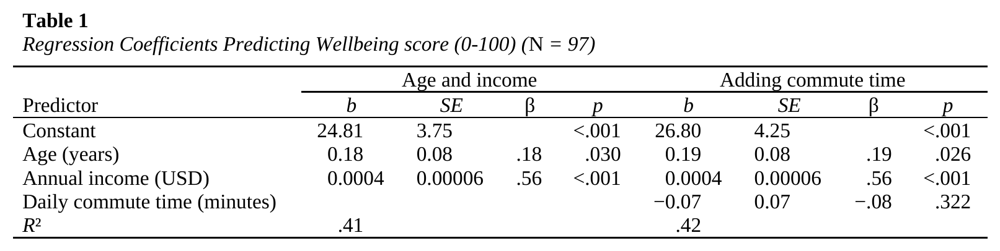

Several results in one table
Publication tables · Page 4
This page uses m1, the regression you saved on 1. Saving results. Its first block makes it again, so you can start here in a new session.
Each table on page 3 held one result. Some tables hold several results. The most common is a table of regression models side by side, each model adding predictors to the one before. jtable() makes that table from a list of saved models.
This page follows the pattern of every How-To: numbered blocks of code that build one script, with the finished script to download at the bottom. Using the How-To pages explains the pattern, and how to reset your session if something goes wrong.
Block 1 repeats the step from page 1 that saved the regression, so this page works in a fresh session too. If m1 is still listed in your Environment pane, running block 1 does no harm: it saves the same regression again.
1. Load jstats and save the regression again
## ---- 1. Load jstats and save the regression again ---------------------
## Load jstats and community, make community the default data frame, and
## save page 1's regression again as m1. quiet = TRUE skips jload()'s
## report, which page 1 shows; overwrite = TRUE replaces a copy loaded
## earlier without asking first
library(jstats)
jload("community", overwrite = TRUE, quiet = TRUE)
juse(community)
m1 <- jlm(WellbeingScore ~ Age + Income, print = FALSE)
The command lines are shown; the standalone ## comment lines aren’t – running a comment just echoes it back and does nothing.
ConsoleTerminal×Background Jobs×> library(jstats) jstats v0.9.289 is up to date. For jstats conventions (useful to AI assistants too), run jai(). > jload("community", overwrite = TRUE, quiet = TRUE) > juse(community) Default data frame set to: community > m1 <- jlm(WellbeingScore ~ Age + Income, print = FALSE) > |
jstats and community are loaded, community is the default data frame, and m1 is saved again. print = FALSE keeps its output out of the Console.
2. A second model
The second model adds daily commute time to the first model’s predictors. It is saved as m2, again with print = FALSE.
## ---- 2. A second model ------------------------------------------------
## A second regression, saved as m2: the first model's predictors, with
## daily commute time added
m2 <- jlm(WellbeingScore ~ Age + Income + CommuteTime, print = FALSE)ConsoleTerminal×Background Jobs×> m2 <- jlm(WellbeingScore ~ Age + Income + CommuteTime, print = FALSE) > |
3. Two models in one table
Given several models in a list, which base R’s list() makes, jtable() puts them side by side in one table. The name each model is given in the list becomes the heading over its columns. As on page 2, this assumes you’ve already set your output folder with joptions(output.dir = "Tables"), so the Word file goes in Tables. To set the folder once for every session, put that line in your project’s .Rprofile, as Loading jstats automatically shows.
## ---- 3. Two models in one table ---------------------------------------
## list() is base R: it groups the two models, each under the name that
## will head its columns. jtable() puts them side by side in one table,
## saved as t3, and writes the table to a Word file
t3 <- jtable(list("Age and income" = m1, "Adding commute time" = m2),
file = "Models.docx", open = TRUE)
## Optional: the table in the Console as well
print(t3) # base RConsoleTerminal×Background Jobs×> t3 <- jtable(list("Age and income" = m1, "Adding commute time" = m2), + file = "Models.docx", open = TRUE) Table 1. Regression Coefficients Predicting Wellbeing score (0-100) (N = 97) 2 models side by side, on a landscape page. Table written to ~/your-working-directory/Tables/Models.docx > print(t3) # base R Table 1 Regression Coefficients Predicting Wellbeing score (0-100) (N = 97) ----------------------------------------------------------------------------------------- Age and income Adding commute time Predictor b SE β p b SE β p ----------------------------------------------------------------------------------------- Constant 24.81 3.75 <.001 26.80 4.25 <.001 Age (years) 0.18 0.08 .18 .030 0.19 0.08 .19 .026 Annual income (USD) 0.0004 0.00006 .56 <.001 0.0004 0.00006 .56 <.001 Daily commute time (minutes) -0.07 0.07 -.08 .322 R² .41 .42 ----------------------------------------------------------------------------------------- > |
The two models sit side by side, in the order of the list, each with its own b, SE, β, and p, and its own R2 in the last row. Commute time is in the second model only, so its row is empty under the first. The table is wide, so jtable() puts it on a landscape page, and says so in the Console.

- The headings are the names given in the list. Left unnamed, as in
list(m1, m2), the models are headed Model 1, Model 2, and so on. - N = 97 in the title is the number of respondents each model uses: here both use the same 97. The models’ Ns can differ when one model adds a variable that has missing values. The title then holds no N: a row labeled N and the table’s note give each model’s.
jtable()says so in the Console, and gives thejcomplete()line to run, before fitting the models again, if you want every model to use the same respondents. - Which results can share a table. Models with the same outcome, all from
jlm()or all fromjlogistic(), sit side by side;jdesc()results are stacked in one table. When results can’t share a table, as with models of different outcomes,jtable()stops with a message. The message gives the lines that make a table from each result and write the tables to one file, as page 3 does.
In SPSS, entering predictors in blocks (Next, in the Linear Regression dialog) gives one Coefficients table with the models one under the other. jtable() puts them side by side, each model’s columns under its name.
In Stata 17 and later, etable builds a table of several estimation results side by side.
Take the whole script with you
That’s the full run-through. If you’d like the entire script in one file to keep and reuse, download it here. Put your own models in the list, each under the name you want over its columns.
The file is the finished version of the script you built: the same code, in the same order. If you run the file a second time, jtable() asks before replacing Models.docx; the file’s first lines say what to answer. Using the How-To pages says more about finished scripts and how to run one.